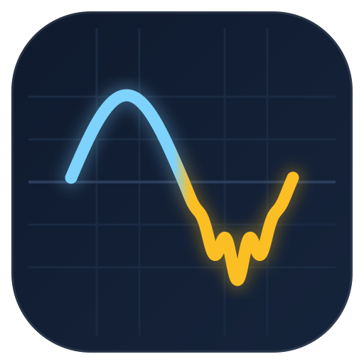
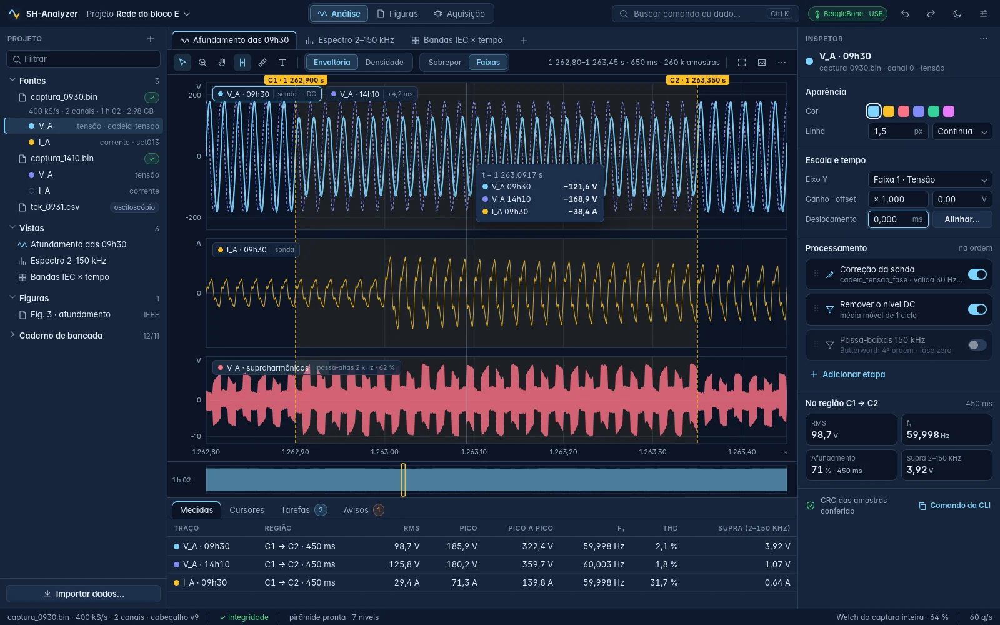
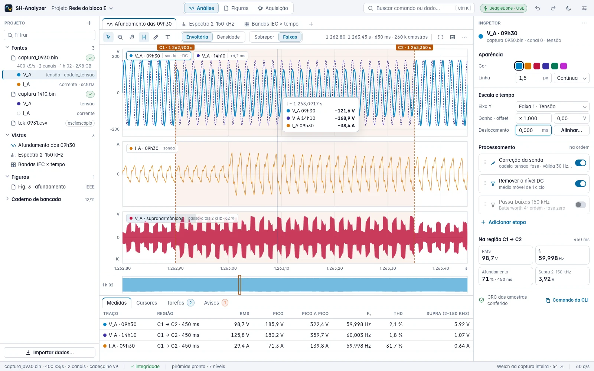
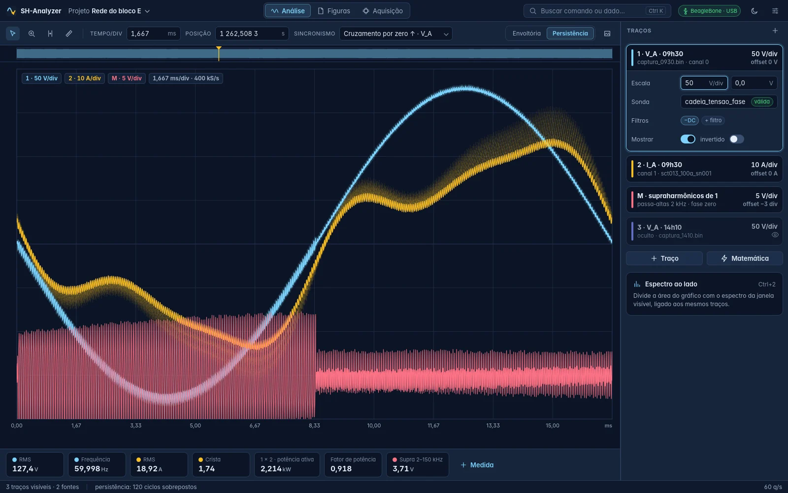
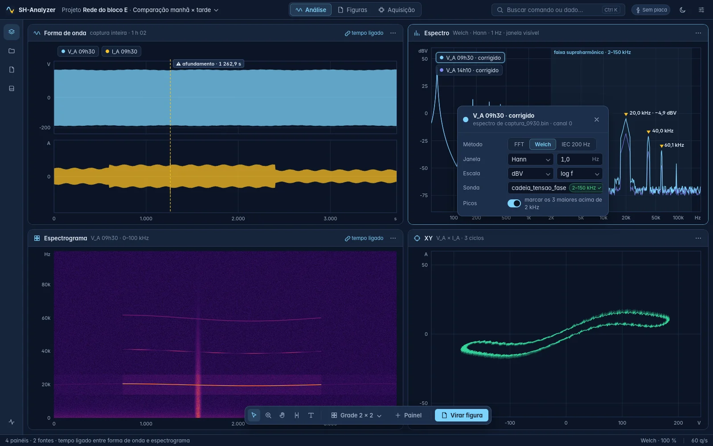
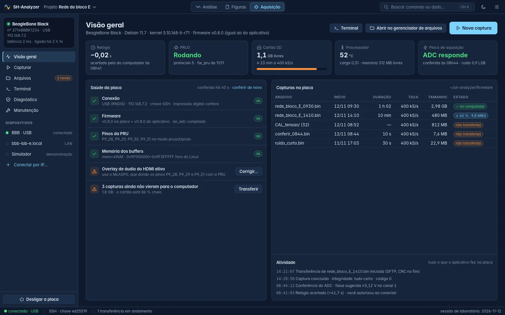
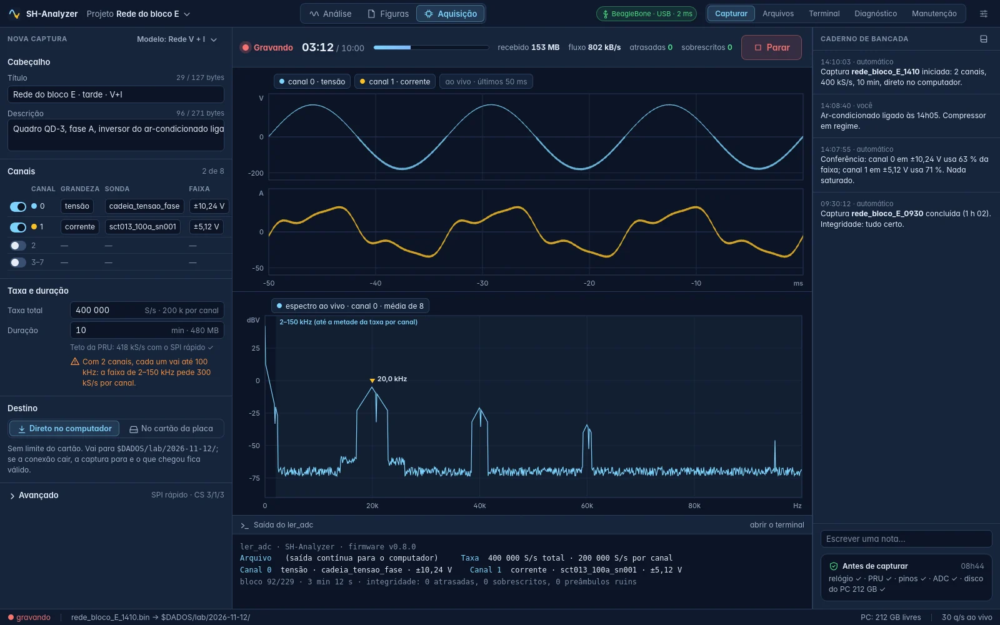

Mockups da interface gráficaDesenhos das telas do SH-Analyzer para escolher a disposição antes de programar (plano em docs/gui-plan.md, seção 13). Os dados são sintéticos; as cores, as fontes e os espaçamentos são os do sistema de design proposto. Clique numa imagem para abrir a tela em tamanho real; numa tela, acrescente #claro ao endereço para vê-la no tema claro.
O lugar onde se abrem as capturas, se sobrepõem traços, se mede e se compara.

Três colunas fixas: o projeto (fontes, vistas, figuras) à esquerda, os gráficos no centro, o inspetor do traço selecionado à direita, as medidas embaixo. O mais familiar (IDEs, Saleae, Origin) e o que escala para muitos traços.

A mesma tela no tema claro: as cores dos traços mudam de tom, não de matiz (o traço 1 é sempre o "céu").

Um osciloscópio: o gráfico ocupa quase tudo, cada traço tem a sua escala por divisão, a persistência sobrepõe ciclos, e os traços viram cartões à direita. Ótimo para quem vem da bancada; pior para comparar muitas capturas.

Painéis livres em grade (forma de onda, espectro, espectrograma, XY), com os eixos ligados, o inspetor flutuante junto do traço e a barra de ferramentas flutuante. O melhor para comparar vistas diferentes; o mais difícil de organizar.
Conectar, conferir, capturar, trazer os dados e cuidar da placa.

Navegação lateral (visão geral, capturar, arquivos, terminal, diagnóstico, manutenção) e a lista de placas. A visão geral mostra a saúde da placa, com o botão "Corrigir" em cada problema, e as capturas que ainda estão nela.

Tudo de uma captura numa tela: o cabeçalho e os canais à esquerda, o sinal e o espectro ao vivo no centro, o caderno de bancada à direita e a saída do ler_adc embaixo. Na recomendação, esta é a seção "Capturar" do B1.